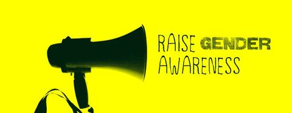
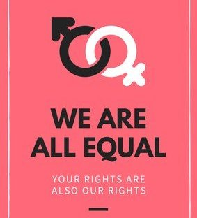
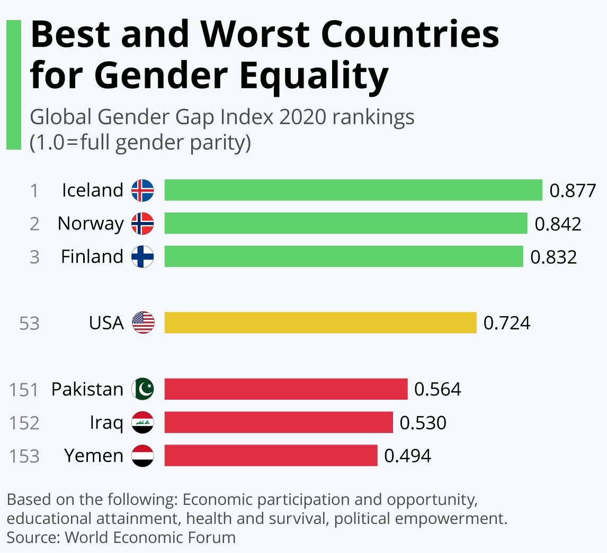
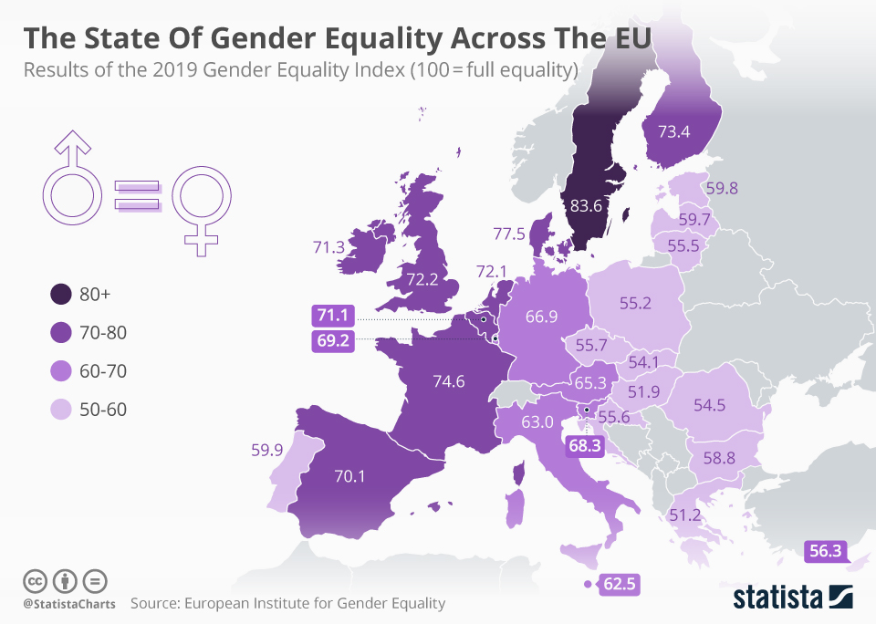

Gender equality is when people of all genders have equal rights, responsibilities and opportunities.
Everyone is affected by gender inequality - women, men, transgendered and gender diverse people, children
and families. It impacts people of all ages and backgrounds. We need gender equality urgently. Gender
equality prevents violence against women and girls. It’s essential for economic prosperity. Societies that
value women and men as equal are safer and healthier.
Gender equality is a human right. Everyone benefits from gender equality. Their rights, opportunities,
and access to society are not different based on their gender. Gender equality does not necessarily mean that
everyone is treated exactly the same. Their different needs and dreams are valued equally. Gender equity is
often discussed at the same time as gender equality for this reason. Since society has favored men for so long,
men have many advantages. Equity fills in the gaps so everyone else can “catch up” to men. It addresses
discrimination and imbalances in society so that equality can become a reality. If a society isn’t able to
acknowledge gender inequality, changes will be nearly impossible. To make gender equality a reality, people
need to be aware of the current state of affairs and the benefits of change.
Awareness Matters on the Road Towards Gender Equality

Human evolution takes place on both biological and societal levels. The former sees changes in
genetic makeup, while the latter involves changes in individuals’ relations with each other and the
world around them. Human relations in many parts of the world are still struggling with power structures.
In the world of gender relations today this power politics is called patriarchy, where men hold power and
women are largely excluded from it and discriminated on the basis of their gender and gender associated roles.

Evident manifestations of gender inequality can be traced in everyday life and at different levels,
from popular narratives like women’s destiny to become homemakers for future husbands,
to gender wage gap, and up to family, penal and citizenship laws. Being aware of discriminations
is the cornerstone to acting consciously at all levels. Communal and family life requires both men
and women to care for children and families. They must ensure resources through work, and also high-quality
social relations and the raising of future generations. Neither women nor men can accomplish any of this alone,
and both have the right – and obligation - to participate in both child-rearing and other work.
In the context of social democracy, this principle is enshrined in the concept of justice, or social
justice, which guarantees equal freedom and life choices regardless of gender.
Gender Equality in Different Countries
On a global level, the World Economic Forum predicts the gender equality gap will not
be closed for another 100 years. Speaking about the latest report Klaus Schwab, founder
of WEF, warned: “At the present rate of change, it will take nearly a century to achieve
parity, a timeline we simply cannot accept in today's globalised world, especially among
younger generations who hold increasingly progressive views of gender equality”. As this
info graphic shows though, the situation varies widely around the world.

Iceland, Norway and Sweden are considered to be closest to what the WEF would consider
full gender parity, while Yemen, Iraq and Pakistan are said to be the furthest away. The
United States isn't close to the top of the ranking either though, ranked only 53rd based
on the following metrics: Economic participation and opportunity, educational attainment,
health and survival, political empowerment.
Progress Made For the Girls and Young Women
Women’s labour market participation in the west and the collapse
of communism in the east has undermined the systems and assumptions of western male breadwinner and dual worker models of central and Eastern Europe. Political reworking of the work/welfare relationship into active welfare has individualized responsibility. Individualization
is a key trend west − and in some respects east − and challenges the structures that supported care in state and family. The links that joined men to women, cash to care, incomes to careers have all been fractured. The article will argue that care work and unpaid care workers are
both casualties of these developments. Social, political and economic changes have not been matched by the development of new gender models at the national level. And while EU
gender policy has been admired as the most innovative aspect of its social policy, gender equality is far from achieved: women’s incomes across Europe are well below men’s; policies for supporting unpaid care work have developed modestly compared with labour market activation policies.

Enlargement brings new challenges as it draws together gender regimes with contrasting histories and trajectories. The article will map social policies for gender equality across the key
elements of gender regimes – paid work, care work, income, time and voice – and discuss the nature of a model of gender equality that would bring gender equality across these. It
analyses ideas about a dual earner–dual career model, in the Dutch combination scenario and ‘universal caregiver’ models, at household and civil society levels. These offer a starting point for a model in which paid and unpaid work are equally valued and equally shared between men
and women, but we argue that a citizenship model, in which paid and unpaid work obligations are underpinned by social rights, is more likely to achieve gender equality.
Beijing Conference on Women
The Fourth World Conference on Women, held in Beijing in 1995, went a step
further than the Nairobi Conference. The Beijing Declaration and Platform for Action
asserted women’s rights as human rights and committed to specific actions to ensure
respect for those rights.
An Organization for Women
On 2 July 2010, the United Nations General Assembly unanimously voted to create
a single UN body tasked with accelerating progress in achieving gender equality and
women’s empowerment. The new UN Entity for Gender Equality and the Empowerment of Women
– or UN Women – merged four of the world body’s agencies and offices: the UN Development
Fund for Women (UNIFEM), the Division for the Advancement of Women (DAW), the Office of
the Special Adviser on Gender Issues, and the UN International Research and Training Institute
for the Advancement of Women.